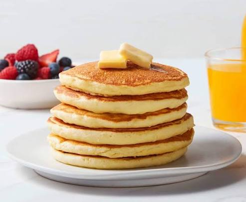

Pancakes
Luchtige pancakes die lekker zijn als ontbijt of brunch. Je maakt ze met een paar simpele ingrediënten en kunt ze serveren met fruit, stroop of poedersuiker.
Ingrediënten
Aantal pancakes:
Bereidingswijze
Maak het beslag
Doe de bloem, suiker, bakpoeder en het zout in een kom. Voeg de eieren en melk toe en meng alles tot een glad beslag.
Voeg de vanillesuiker toe
Roer de vanillesuiker door het beslag. Laat het beslag eventueel een paar minuten staan zodat het bakpoeder zijn werk kan doen.
Verwarm de pan
Zet een koekenpan op middelhoog vuur en laat een klein beetje boter smelten.
Bak de pancakes
Schep kleine hoeveelheden beslag in de pan. Bak de pancakes tot er belletjes ontstaan en draai ze daarna om. Bak de andere kant goudbruin.
Serveer de pancakes
Leg de pancakes op een bord en serveer ze bijvoorbeeld met aardbeien, banaan, stroop of poedersuiker.